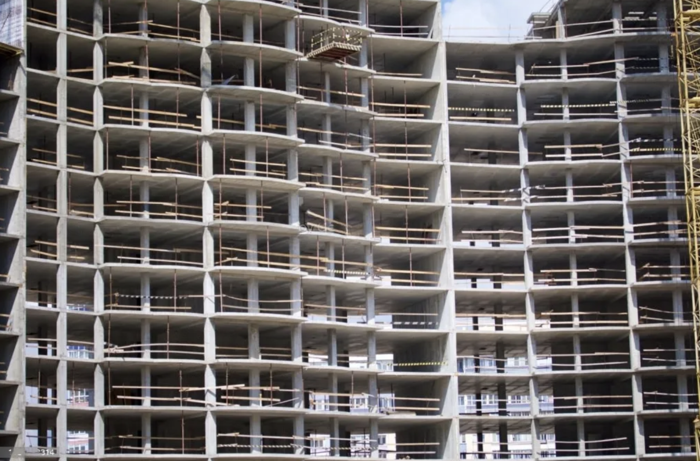
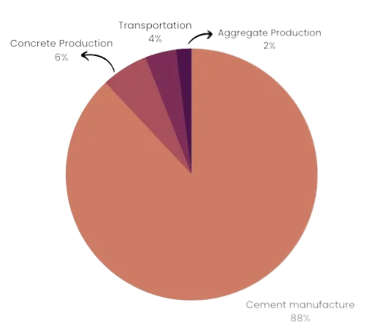
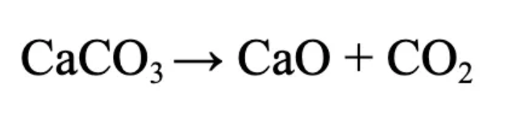
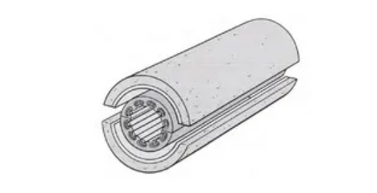

There’s a very high chance that the house, building, or place you are reading this from is made from concrete. It’s really not difficult to make that inference as almost half the buildings in the world are made from cement, making it the single most widely used material in the world, coming second only to water. However, there stands a lingering problem in concrete that is quietly, yet maliciously dragging us behind in our fight against mitigating climate change. Concrete is one of the largest producers of CO2 emissions, and is having growingly detrimental effects in exacerbating the planet’s greenhouse gas emissions. 
Exploring the facts of concrete production alone can send chills down your spine, hence here are some reasons why our most used resource is going to be our biggest enemy.
Last year alone, we produced over 4 Billion tons of cement, more than what we have produced each year before that. And what's worse is the fact that by 2050, we are projected to produce over 5.5 billion tons of cement, with the rise of the global world population and rapid urbanization. Moreover, cement (which is used to produce concrete) production accounts for almost 5–10% of the global carbon dioxide (CO2) emissions, and approximately 50% of the world’s total industrial non-CO2 greenhouse gas emissions, including nitrous oxide.
Not only that, but the process of extracting raw materials for the production of cement, as well as its transportation produces endless supply chain and raw material emissions that aren’t tracked. CO2 isn’t the only effect, it extends to plant life and habitats. According to the United Nations Environment Programme, cement production requires large amounts of raw materials, including limestone, clay, and shale, which are extracted through mining activities, and can cause soil erosion, deforestation, and habitat destruction, leading to biodiversity loss. Besides, an estimated 1.6 tonnes of water is needed for every tonne of cement produced, leading to water and environmental damage in previously water-scant regions.
Yet another source of CO2 is the heating of heating raw materials to very high temperatures, which requires large amounts of fuel and releases tons of CO2, methane, and nitrous oxide, exacerbating climate change. For every ton of cement produced, we also create a ton of CO2.
To identify the causes of emissions in the production of concrete, it is first important to dissect its production all the way from the raw materials level. The production of concrete is a highly complicated process that requires massive amounts of energy, resource, and materials. Therefore, to have a better understanding of the problem at hand, let's get into the root cause of concrete and its multiple processes.
Concrete is made up of 3 main ingredients: Cement (10–15%), aggregates (65–75%) such as sand and gravel, crushed stone, and finally water (10–15%). The majority of the production time of concrete is taken up by the formation of cement from raw material to ready-mix. However, it is also the most energy-intensive process and
The production of cement is an extremely long and vigorous process. For the sake of our understanding, let's dive into the surface-level deep details of how its produced. There are a total of 5 processes: Mining, Crushing, Drying + Grinding, Sintering, Cement Grinding → Cement.
Limestone is the primary raw material that is used to produce cement, due to its strength and abundance in the earth’s crust. In order to obtain limestone, vast amounts of it need to be mined from a quarry, and then transported to the crushers via dumpers. The raw materials, mainly limestone, and clay, are extracted from their quarries by blasting or drilling using heavy mining machinery.
The initial step in the production of cement involves crushing limestone rock in a primary crusher, which reduces the rock size to a maximum of approximately 6 inches. Subsequently, the crushed limestone is combined with clays and fed into a secondary crusher to achieve a particle size below 3 inches. The resulting raw mix, consisting of 70% limestone and 30% clays, is then transported and deposited in a raw mill bin to undergo grinding at a later stage. Additionally, various other materials utilized in cement manufacturing, known as additives, are stored separately in designated bins.
The raw mix and additives are transported by blowers to the raw mill, with a drying and grinding chamber. Hot gases from a kiln system dry the mix before entering the grinding chamber, which includes balls of different sizes to grind the materials. The separator divides the fine and coarse product; the latter goes back to the mill inlet for regrinding. A “cyclone” then separates the fine materials and gas, resulting in a raw meal. This raw meal is stored in a silo and then conveyed to the preheater kiln for sintering as kiln feed.
This is the process by which a majority of the CO2 Emissions are produced. The kiln system consists of a multi-stage cyclone preheater, combustion chamber, riser duct, rotary kiln, and grate cooler. The feed is input into the rotary kiln where it is superheated to approximately 1400 C to form clinker components through a process called sintering. The heat is produced from the burning of fuel in the main burner rotary kiln and in the combustion chamber with the help of preheater exhaust fans or fans. Coal, natural gas, fuel oil, and petroleum coke are often used for firings.
Sintering is when the chemical bonds of the raw meal are broken down through heat, recombining into new compounds that form a substance called clinker. The clinker is the product of the decarbonization of limestone and comes out as extremely hot, with small, dark gray nodules 1mm to 25mm in size. It drops onto the grate cooler for cooling from approximately 1350–1450 C to approximately 120 C through the use of different cooling fans. Part of the hot air extracted from the cooler is utilized as secondary and tertiary air for combustion in the rotary kiln and combustion chamber, respectively. The chemical reaction by which limestone is converted into clinker is here:
The final part of the process is the additives like gypsum, limestone, or slag, based on the type of cement needed. The feed is ground by the ball mill to form a fine powder that is later separated into fine and coarse products by a separator. The coarse material goes to the mill inlet for regrinding, while the fine powder is stored in concrete silos as cement. Finally, cement is produced, and it can now be transported to building sites for mixing with concrete.
After the complicated process of producing cement has taken place, the remaining creation of concrete is straightforward:
1. The production of concrete starts by mixing cement, water, and aggregates such as sand, gravel, or crushed stone in the correct proportions.
2. The mixture is then stirred continuously until it reaches a uniform consistency.
3. Concrete is transported by trucks or pumps to the construction site, and workers pour it into molds or forms.
4. During the pouring process, reinforcing steel bars, also known as rebar, are placed inside the molds to provide strength and durability to the finished product.
5. Once poured, the concrete is leveled and smoothed using tools such as screeds and floats to ensure a uniform surface.
6. The concrete is left to cure or harden for a specific period of time, which allows it to gain strength and durability.
7. After curing, the forms or molds are removed, and the concrete is finished with various techniques such as polishing or staining to achieve the desired appearance.
Overall, the production of one ton of clinker releases about 0.83 tons of CO2 and the production of one ton of OPC releases about 0.54 tons of CO2 making this industry responsible for 5% to 8% of total anthropogenic greenhouse gases. And in essence, The two main sources of CO2 emissions resulting from cement production are (i) the decarbonization of limestone since CaCO3 is decomposed into CaO and CO2 at temperatures above 550 °C, with this contribution representing about 60 to 65% of the total CO2 emissions and (ii) the fossil fuel combustion to heat the cement kiln, which is responsible for the remaining 35 to 40% of the emissions.
We need to reduce these numbers drastically if we want to have a good shot at reducing our greenhouse gas impact. Therefore, our solution to the problem comes in at an accurate time to be an attack force in the fight against the carbon dioxide emissions of cement.
Let me introduce you to CarbonX, a starup aimed at reducing overall cement emissions through the entire concrete production supply chain:
We at CarbonX, explored the harmful nature of the calcination of limestone and came up with successful alternatives to the raw material that produces significantly less CO2. We use a multi-faceted approach to create an equally durable yet majorly sustainable alternative for cement. Using magnesite (MgCO3) as a replacement for limestone, and subsequently being able to use renewable energy-powered sources to power the kiln, we are able to cut down carbon emissions by half. Our solution involves a few parts: Magnesite, The Kiln, and Carbon Sequester. Before I start, here’s the definition:
Reducing the carbon impact of concrete production by re-designing the production of cement using a brand new electric kiln prototype. CarbonX’s electric kiln reduces the carbon footprint by more than half by replacing fossil fuels with renewables, limestone with cost and energy-efficient MgO, and introducing carbon capture technologies.
Magnesite (MgCO3) can be decarbonized to form Magnesium Oxide (MgO) and can be used as an alternative to Limestone(CaCO3). There are a multitude of reasons why MgO is more beneficial:
The carbonation of RMC follows its hydration process and leads to strength gain while enabling the absorption and permanent storage of CO2 in the form of stable carbonates. In these systems, the hydration of MgO to form Mg(OH)2 (brucite) is followed by its reaction with CO2 to form hydrated magnesium carbonates (HMCs).
The main product we at CarbonX have devised is the all-new RMC E-Kiln. It has the following features:
Although MgO can be synthesized from seawater and brine, there still isn’t enough to meet the vast needs of the concrete industry. Therefore it’S important to use its preliminary compound, Magnesite or MgCO3. As the calcination of Magnesite requires significantly less heat, we have the ability to use electric heat to speed up the process. The magnesite calcination process takes place in the following way in our Kiln:
MgCO3 is poured into the kiln funnel, which is then directly dropped into the rotating kiln. The rotating kiln powered by heating elements, raises the temperature of the MgCO3 decomposing it into its two portions: MgO(Magnesium Oxide), the element we are going to use as a replacement for clinker, and CO2, which is traditionally released into the atmosphere. We later tackle that using our carbon capture.
Because our kiln uses two inputs, the main input of Magnesite comes from the top funnel, whereas the synthesized MgO originates from the side funnel along with other additives:
As the content passes through the kiln, it gets mixed and comes out as a fine MgO powder that has already cut down half of the limestone emissions due to the use of an electric alternative.
Decarbonizing limestone using electric heat proved to be an extremely complicated process as almost very few yet costly electric devices have the capacity to reach temperatures of 1400 degrees and above. With the alternative of Magnesite, however, we can cut that in half, with almost 700 degrees required for the calcination process. This can be achieved by using heating elements in the rotary kiln
The heating element in the kiln works by converting electrical energy into heat energy through the process of resistive heating. Resistive heating occurs when an electric current flows through a material with high resistance, causing the material to heat up. The heating element is going to be made of a material called nichrome, which has a high resistance and is able to withstand high temperatures. As the electric current flows through the heating element in the kiln, it encounters resistance and generates heat, which is then transferred to the surrounding environment, aka the insides where the components are being processed. The amount of heat produced is proportional to the resistance of the heating element and the amount of current flowing through it. By controlling the current flowing through the heating element, the temperature can be adjusted to meet the desired heating requirements. Therefore, it can totally be catered to our liking to manage the changes in materials inside the kiln which will be continuously mapped by our computers.
The last step of our kiln is the carbon capture device. It captures CO2 from the emission originating from the kiln, and other exhaust gases through absorption. In absorption-based carbon capture, CO2 is selectively absorbed by a solvent. The captured CO2 is then compressed and transported to a storage site storage, or it can be directly given to concrete production sites for use in binding.
Using this method of carbon capture can allow us to reach Carbon Negative, totally negating all the CO2 production of concrete.
We worked tirelessly to validate our solutions with experts, and from proven scientific research, patents, and existing companies working on the problem. Here are our findings:
After reaching out to experts in companies spearheading the concrete revolution, such as Furno Materials, CarbonBuilt, CarbonCure, and VTT, we collected inspiration, research, and feedback on the validity of our solution. Here’s what one of them thinks about CarbonX:
I definetly see value in this solution, and its surely going to be helpful in tackling the concrete problem. It’s important to note that concrete is a hard-to-abate problem and one solution isn’t going to transform the industry, rather a combination of solutions will see to zero-carbon from cement in the next 10–20 years. But what you’re doing will certainly prove valuable in achieving that goal” — Sal Brzozwski
Scouring the internet for research that could back up our solution was an essential part of the overall process. And owing to their usefulness, it’d be unfair to not include them here: